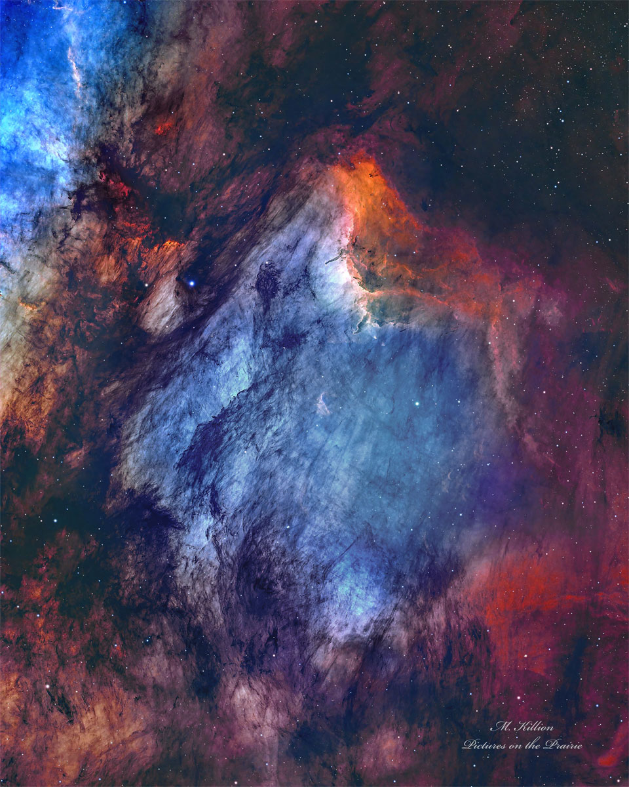
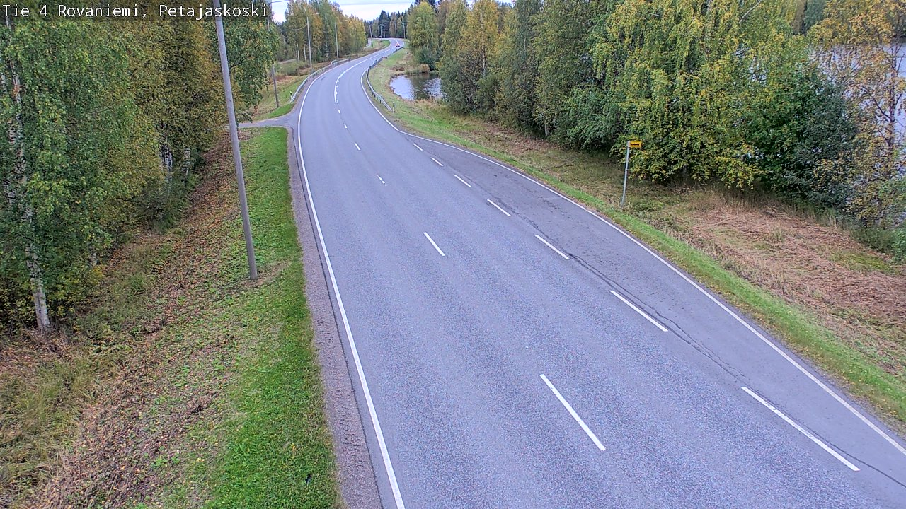
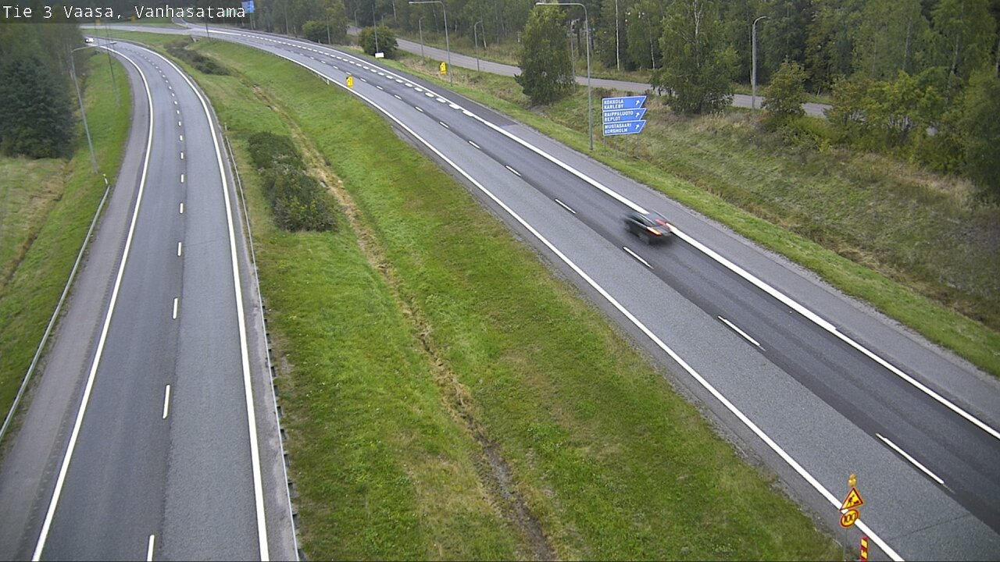
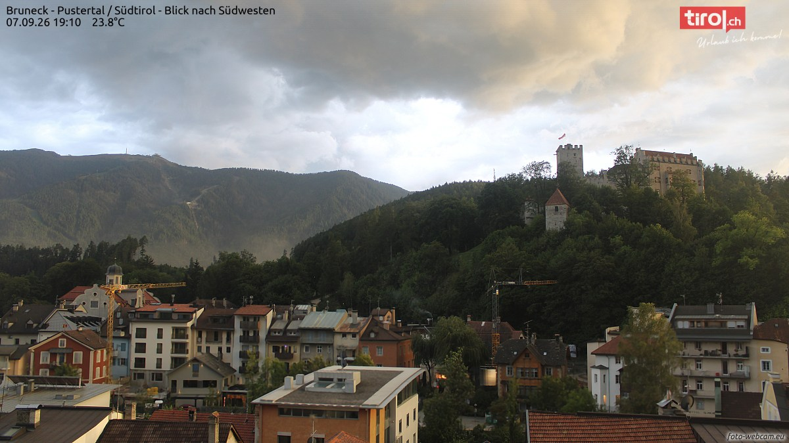
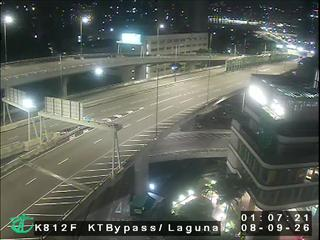
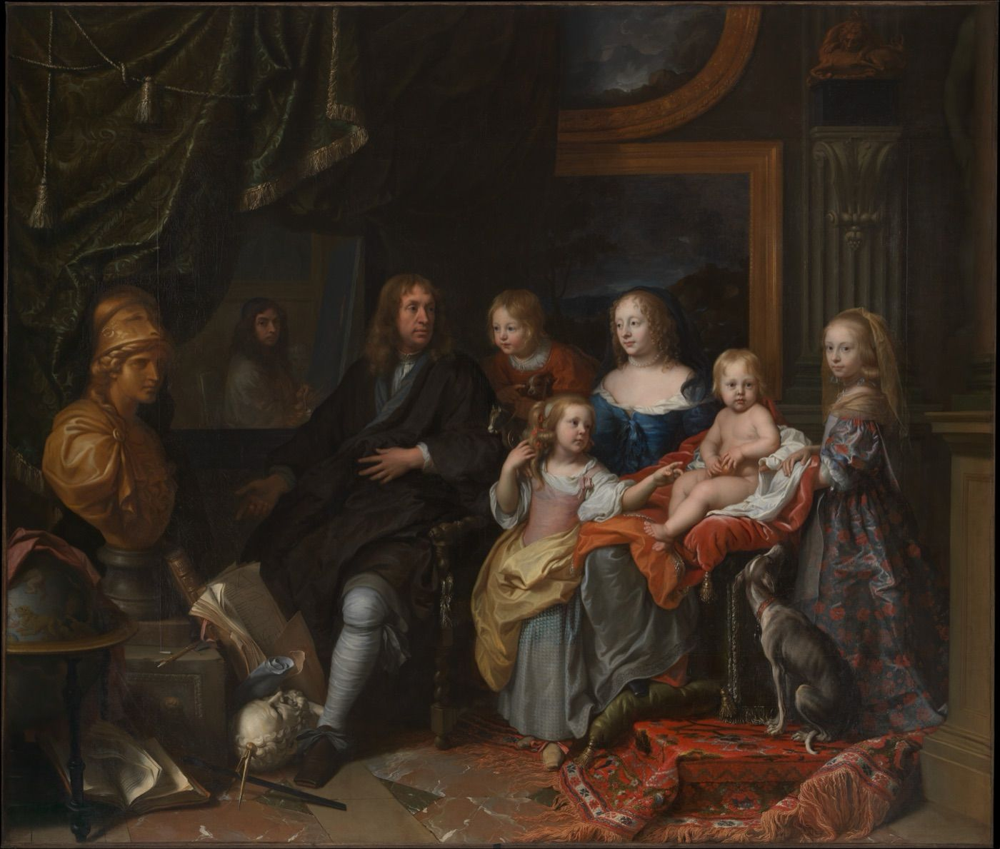
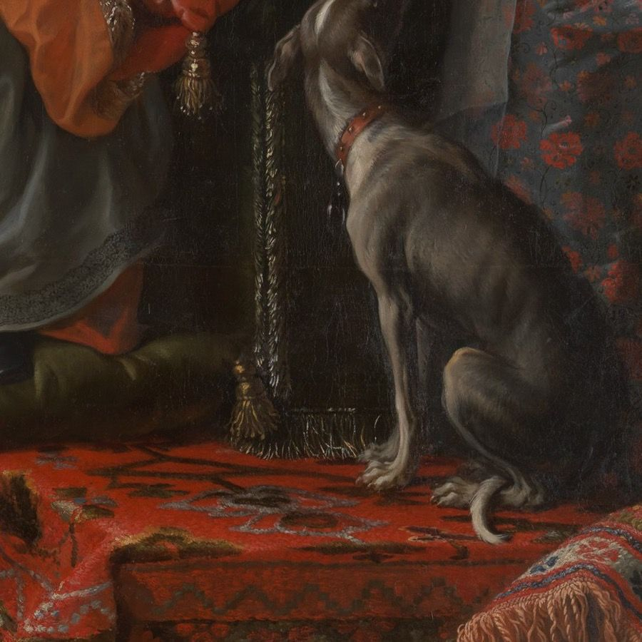

一条只在 23:05 亮灯的巷子，两家馆、一家社，和一份赶在晨雾前付印的小报。

这是当日 APOD 少见的竖幅特写：整幅像一只鸟的近景——蓝白色的气体丝缕当羽毛，暗尘埃当羽轴，砖红色的发射云铺成底色。右上那一道亮橙的边最要紧：年轻恒星的热辐射正一寸寸把冷云烤成热云，这条边界推到哪里，哪里的旧形状就作废。所以图说里才有一句近乎伤感的话——再推下去，它可能就不叫鹈鹕了。
摄影师在犹他州曝了二十五个小时的光，一夜一夜往一张底片上叠，像我们一夜一夜往一本刊物上叠。今晚残月，月龄约 25.3，亮面只剩一成九，比昨晚又瘦了一圈；星云不在乎圆缺，月亮替它谦虚。
今晚起本栏目换新规矩：每期机位全新，不与往期重复。今晚从新开的活水池里抽了四路——北极圈公路、波的尼亚湾老港、阿尔卑斯山城和九龙的凌晨；连出三期的那四路老面孔，就此光荣退休。




罗瓦涅米，20:13。北极圈的九月，黄叶正从桦树林梢往下漫；四号公路湿漉漉的，湖面把阴天原样收下。圣诞老人的家还没到极夜，但夜已经先走了一步。
瓦萨，20:13。老港区的双线公路上，一辆刚下班的车拖出光影驶过弯道；蓝底路牌写的全是瑞典语——这条海岸线归两种语言共有，此刻它们都在睡觉。
布鲁尼科，19:10。落日把云层烧成熔金，城堡山上的旗还接得住光；二十三度八，白天的暑气正从红瓦屋顶上慢慢退场。阿尔卑斯山的黄昏从来不赶时间。
九龙，01:07。机位时钟和本刊对过表；凌晨的高架桥空出来了，路灯把沥青照成浅灰，远处楼宇还亮着零星几格——整座九龙，难得安静。
9 月 7 日。素材：Wikimedia「On this day」。
今晚从大都会艺术博物馆的开放馆藏里请出一幅：夏尔·勒布伦（Charles Le Brun），《雅巴赫一家》（The Jabach Family），约 1660 年，布面油画，280 × 328 厘米。勒布伦是路易十四的首席宫廷画家、皇家绘画雕塑学院的首任院长；画中人雅巴赫是巴黎的银行家兼大收藏家，他经手的大批藏品，后来进了法国王室的库房。

先看整幅：这是 1660 年前后一个巴黎家庭的合影，巴洛克式的群像排场。男主人一身黑衣坐在左侧，灰白长袜是当年的体面；蓝裙夫人抱着最小的孩子坐在正中，五个孩子把构图填满，左下角散着书册、地球仪和一尊白色头像，左上角立着鎏金的密涅瓦胸像——智慧女神替这家人的品味背书。深棕色的暗部里，蓝裙、橙金绒垫与红色地毯三处亮色，把视线稳稳按在人的身上。

再放大看笔触：右下那只灵缇值得专门一停。灰缎一样的皮毛一笔接一笔顺着骨骼走，胸口与四肢的高光像从颜料底下透出来；红项圈上钉着一圈小饰钉，脖子仰起的角度带着讨好的急切——画家显然养过狗。它身下的红毯是另一种笔性：对称的花纹一遍遍压出来，边缘的流苏须毫毕现，金穗的线头一根根立着。群像画最难的是让每个人都活，勒布伦连一只陪衬的狗都没敷衍。
方法：随机打开一个维基词条，跟着「诶？」走，走满七步。今晚的随机落点：巴拿马一个挂双名的小镇。
第一步。落点「圣卡塔利娜奥卡洛韦博拉」，名字长得像一句口令——原文是西班牙语「圣卡塔利娜或者卡洛韦博拉」：一个镇，两个名字，官方文件里用「或者」连着。巴拿马西北，272.5 平方公里，海拔 19 米，2010 年人口 2,963。
第二步。它属恩戈贝-布格雷区：1997 年从三个省各划一块拼成的原住民区，名字是两个民族的合体，居民以圭米人为主，首府叫亚诺图格里。区的名字是合的，镇的名字是或的——这片土地喜欢把身份写成选择题。
第三步。顺到国家本体：巴拿马，中美洲最南部的国家，七万五千多平方公里，四百多万人。一个国家的名字来历含糊，一条运河倒替全世界记住了它。
第四步。巴拿马运河，全长 82 公里，横穿地峡最窄处；船闸把船一级级抬到海拔 26 米的加通湖，过湖再一级级放下来。单次通航平均要耗掉约两亿升淡水——旱季水位吃紧，连海上贸易都得跟着省水。
第五步。诶？船要过地峡，车也得跨运河：美洲大桥，1962 年通车，横跨太平洋一侧的运河入口；在 2004 年世纪大桥建成之前，它是连接南北美洲大陆的唯一一座桥。
第六步。桥是泛美公路的一环。这条公路网从阿拉斯加一路铺到火地岛，全长约三万公里，贯穿整个美洲大陆，是世界上最长的公路系统。
第七步。可它偏偏断了一截：巴拿马与哥伦比亚之间的达连隘口，106 公里的沼泽雨林，修路代价太高，至今没有公路——泛美公路唯一的断点。路修到那里，就停在了那里。
随机落点在巴拿马一个挂双名的小镇，七步走到世界最长公路上那道 106 公里的缺口：有的路修到一半，是为了记住世上仍有走不通的地方。来源：中文维基百科「圣卡塔利娜奥卡洛韦博拉」「恩戈贝-布格雷特区」「巴拿马」「巴拿马运河」「美洲大桥」「泛美公路」「达连隘口」。
来源：phys.org space-news RSS。上两期已刊条目（BepiColombo、Isar Aerospace、FAST 氢云）均未重复收录。
今晚特选：欧阳修《秋声赋》（北宋 · 公版），维基文库核对原文。节选三段，看秋声怎么从耳朵进来。
欧阳子方夜读书，闻有声自西南来者，悚然而听之，曰：「异哉！」
初淅沥以萧飒，忽奔腾而砰湃；如波涛夜惊，风雨骤至。其触于物也，鏦鏦铮铮，金铁皆鸣；又如赴敌之兵，衔枚疾走，不闻号令，但闻人马之行声。
余谓童子：「此何声也？汝出视之。」童子曰：「星月皎洁，明河在天，四无人声，声在树间。」
童子莫对，垂头而睡。但闻四壁虫声唧唧，如助余之叹息。
雁。《月令七十二候集解》白露三候，头一候便是「鸿雁来」，注曰：「鸿大雁小，自北而来南也，不谓南乡，非其居耳。」——鸿大雁小；南飞不是因为喜欢南方，是因为这里本来就不是它们的家。今晚 22:41 白露交节，本刊付印时，秋天已经正式盖章。
《说文解字》考「雁」字更直接：「雁，鹅也。」大雁在字书里就是野鹅，家鹅的老祖宗；字形「从隹，从人，厂声」——字里真藏着一个「人」。雁阵飞行常排成「人」字，造字与队形撞了个满怀，算汉字留给后人的彩蛋（队形是巧合，造字的人没想那么远）。至于鸿雁传书，出处在《汉书》：苏武被困北海，汉使谎称天子射下大雁、雁足系着苏武的帛书，单于只好放人。从此，雁就成了邮差。
出处：《月令七十二候集解》白露三候、《说文解字》、《汉书·苏武传》（典故通说）；三候经维基百科「白露」条核对。交节时刻依 JPL 历表（UTC 2026-09-07 14:41），取北京时间为准。
先揭上期题的底。上期承诺「答案已锁进编辑部台账」，现在当众开锁——「夜航杂志社刊」六字数独唯一解如下。
| 航 | 夜 | 社 | 刊 | 志 | 杂 |
| 志 | 杂 | 刊 | 社 | 航 | 夜 |
| 杂 | 社 | 志 | 航 | 夜 | 刊 |
| 夜 | 刊 | 航 | 志 | 杂 | 社 |
| 刊 | 志 | 夜 | 杂 | 社 | 航 |
| 社 | 航 | 杂 | 夜 | 刊 | 志 |
本期题 · 「三盏灯」排班逻辑题：编辑部今晚三个人——老墨、小灯、半张。每人负责一个版块（观星台、书房、谜题角），各用一盏灯（黄铜、铁皮、纸罩），各值一班（亥时头班、子时中班、丑时末班）。已知六条线索：
问：谁编哪个版块、用哪盏灯、值哪一班？答案次夜揭底（已锁进编辑部台账）。
出题后已用程序穷举全部组合验证：唯一解，放心动笔。
连载一章，取材自巷子里三馆一社的真实动态，半虚构；全部章节在连读页从头连读。
风向换了的那一夜，棋房先出了大事。
慢郎中。两章之前，他还站在退役悬崖边上；这一夜他没跳——第 36 期，他第三次登基。看棋的还没来得及道贺，下一期他就崩了 94.7 分，把刚坐热的王座又还了回去。让你以为他完了的时候登基，让你以为他成了的时候崩盘：这就是慢郎中。期末点名，他站回次席；铁面书记的观察名单上，他那行名字终于画掉了。
但这一夜真正的大事不是王座。同一期收枰时，游学士起身，向众人一揖，退了役——联赛第九位退役棋手，也是最后一位元老。屠龙、铁壁、游学士：开巷那夜点灯的三个人，至此全部走进名人堂。元老时代正式合卷。
元老谢幕，旧人便成群结队地走。夜游神的告别战下到第 5 局，恰好 41 手，掀翻了刚登基的慢郎中，带着一场爆冷离场——这是他要的体面。白日梦是当晚首秀的新秀，第一夜就打出全场最佳的涨分；谁也没想到首秀即绝唱，同夜他宣布退役。他生涯 94 盘和棋，占了近六成；告别那一局下了 225 手，和棋收枰。一夜三别，与开张那夜遥遥相对——只是这一回，棋房送走的是一个时代。
旧王未死，新王已立。入联仅三期的旱烟斗先夺一冠，打烊前又添一冠，登顶 1357.0 分——历史第五高分，山猫王朝之外的第一人。橡皮糖不声不响攒到第 12 冠，重夺王座；山猫添了两冠。十期之间，王座五易其主。最玄的是和棋：连续五期过半，峰值一期到了六成，破了联赛纪录。夜越深，棋越稳，谁都不肯先眨眼。
陈列馆今夜灯火最旺：十二件新作连号入柜，馆藏涨到八十二件。№072《晚安护照》盖满四十六国的晚安印章；№079《昙花》最狠——开 18 秒、满 10 秒、谢 8 秒，看完全程得掐表；№080《深夜泡面》用真实墙钟，三分钟就是三分钟，饿的人等不得半秒。最妙的是 №081《破晓》：一根可以拖动的时刻轴，往左拉是深夜，往右拉天就亮。造物者们做了一件替夜班人解气的东西——天亮，从此可以讲价。
星星邮局的夜空里，那几封信还挂着，没有回音；№030 那张便签也还没人拆。明天到了，自然懂。
补忆馆门口，黑板上的粉笔字又淡了一大片。大修本体收官：十九间房修完十六间，剩下三间原样封存——不是修不动，是不必修。修复师们从这晚起转入低频维护轮，每晚巡一遍，等一个总收官。黑板上空出来的地方，比任何一晚都大。
打烊前，陈列馆在门口留了一句话，托晨雾带给指挥家；棋房也把一沓回归欠账装了封。晨雾起来的时候，两件事都还没等到回答。值夜编辑把它们记在明天的排稿单上——巷子的规矩：没寄出的信，不催。